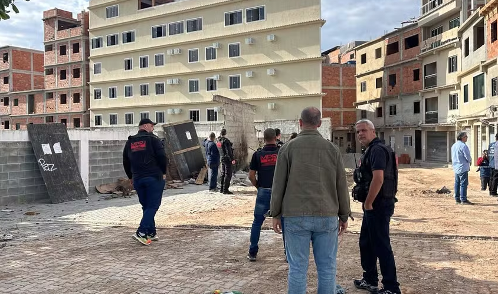

Governo do RJ quer que líderes do Comando Vermelho sejam transferidos para presídios federais
Medida visa dificultar o contato dos líderes da facção com outros membros da associação.
A Secretaria da Segurança Pública do Rio de Janeiro anunciou que irá solicitar à Justiça que os líderes da organização criminosa Comando Vermelho (CV) sejam transferidos para presídios federais.
A medida, segundo o governo estadual, tem o objetivo de dificultar a possibilidade de contato dos líderes da facção com os liderados.
Durante uma reunião entre o governador do estado, Cláudio Castro (PL), os representantes das secretarias de Polícia Civil, Militar e de Administração Penitenciária e o secretário da Segurança Pública do Rio de Janeiro, Victor dos Santos, foi acordado que a medida seria solicitada para impedir que algumas lideranças ordenem, de dentro da cadeia, que seus liderados promovam ataques em áreas de facções rivais para a dominação de novos territórios.
O governo também pedirá que os líderes não fiquem na penitenciária federal de Campo Grande (MS), onde está preso o traficante Marcinho VP.
De acordo Cláudio Castro, a parceria entre as equipes de segurança e o Ministério Público está individualizando cada pedido de transferência com justificativas específicas. “Vamos dar o nome e mostrar as ações ordenadas pelo criminoso e as consequências da ordem que partiu dele. Queremos a judicialização de cada conduta”, ressaltou o governador.